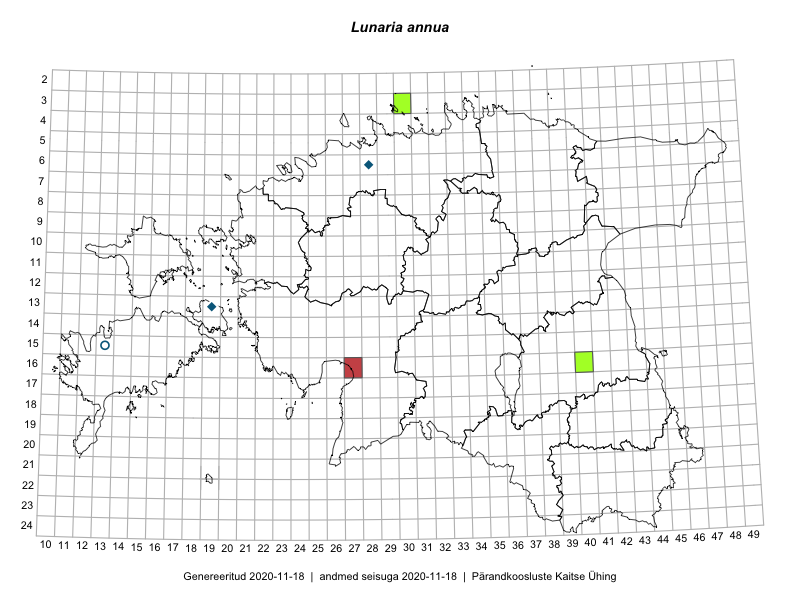

Lunaria annua
Uuendatud: 2016-12-01
Kaardile koondatud taksonid: Lunaria annua L.

Kaart põhineb 5 kirjel, neist vaatlusi 2 ja eksemplare 3.
Viited andmebaasikirjetele
Kaardile koondatud taksonid: Lunaria annua L.
Kaart põhineb 5 kirjel, neist vaatlusi 2 ja eksemplare 3.
Viited andmebaasikirjetele